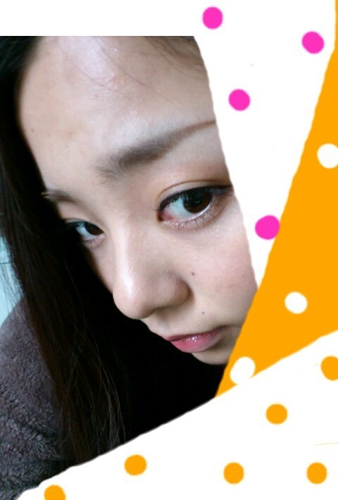

| 2012/04 26 Thu | 川村真洋 さゆにゃんメール*・ω・* ろってぃー♪。 |
ほいっおはようございます^^
ろってぃー♪ですっ))

7日前の話なんですが、
さゆにゃん☆から
すごい嬉しいメールが
前きたんです。
この前、さゆにゃん☆blogに
メンバーの中で
さゆにゃん☆の大好きな
戦隊ヒーローをつくるって
ゆうコーナーで
ブルーは,
ろってぃー♪
って書いてくれていた
のを見て
嬉しくて思わず
さゆにゃん☆にメール
入れたんです。
『blog見た*・ω・*
まひろ ブルゥゥゥーω
あのぉ〜
戦隊ヒーロー*^^*
うれぴい、ありがと♪ 』
って・ω・´
ぢゃあ、さゆにゃん☆から
こう返事がきたんですぅ♪
『あ〜ブログ
読んでくれたの〜＾∀＾
有難う〜＼(^o^)／
ろってぃーはね、
歌歌ってる時とか
ダンスしてる時、
めっちゃかっこいい！！！
すごい憧れる！(o^^o)
あとねブルーって、
色々内に秘めてることが
多くて、
悩みとかも周りに
相談せずに
一人で自分と闘う
タイプなんだ＾＾
努力家で、
苦しみとか抱えてても
それを見せず、
いつも周りのこととか
すごい考えて行動して、
レッドとはまた違って、
影のリーダーというか、
見えないところで
めちゃくちゃ
頑張ってる人だから、
ろってぃーに
ぴったりだと思った！(*^_^*)』
って*・ω・*
コピーして
貼っちゃいました(＾ω＾)
本当にうれしかった(⌒‐⌒)
今日のメンバーのことは
さゆにゃん♪のこと
書くぅ〜*＾ω＾*
さゆにゃん♪は顔が小さい
うえに、
大きなだて眼鏡をしてる時
顔と眼鏡の比率が
1:1です★☆★
かわいいんだから・ω・〃!
さゆにゃん♪は
マイペースです＾＾
喋るのも歩くのも行動も
それにメンバー１の
食べるスピードのおそさ＾ε＾笑
さゆにゃんは
みなさんが思っている
可愛くて優しくて
戦隊ヒーローが大好きで
私服もフワフワしてて
そのままのさゆにゃん♪やと
思いますっ*＾ω＾*
でも一緒にいる時は
変なこと言ってきたり
意味わからんことして
笑ったり
テンションあがったら
ずっとしゃべってるし
=＾ω＾=
さゆにゃん♪は
ほんっとに優しい子です*^^*
大好きです＾ω＾
それと
ミキサーで氷を
使いたいことがあって
氷だけ欲しいらしく
さゆにゃんのお家に
氷だけプレゼントしに
行きました*・ω・*
次いつでも
さゆにゃん♪が訪れてきて
『氷ちょうだ〜い』
って言われても良いように
いっぱい氷つくってます(⌒‐⌒)
ぢゃあ 今から
シャワー浴びよっかな・ω・〃
のし。